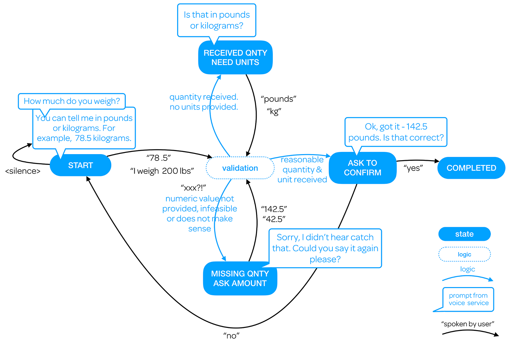
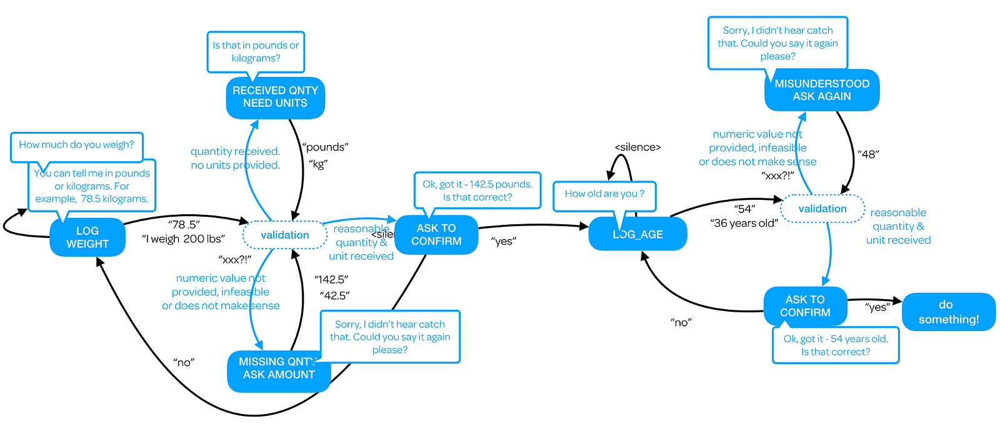
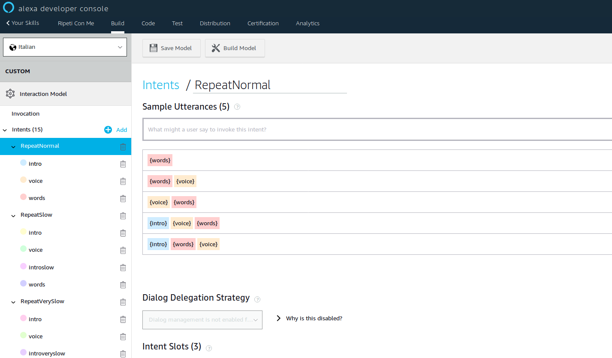
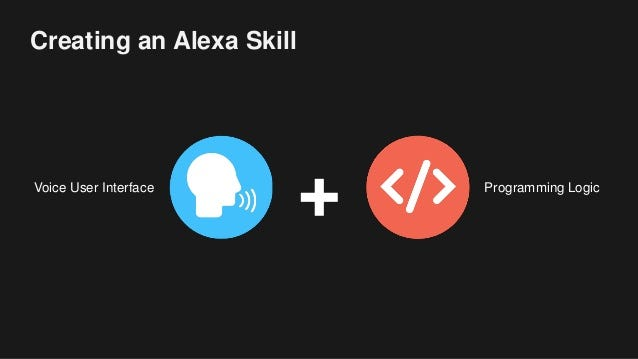

Stateful Alexa Skills?
My change requests to enhance Alexa programming model with dialog state management support
In this article I want to deepen a typical problem when developing a not trivial Alexa skill, as a complex task-completion workflow or a well-structured voicefirst game: the need of a state management framework supporting developers to manage multi-turn conversations contexts.
The need of a dialog “state management” is a topic very well explained in the Chas Sweeting’s beautiful article “Lessons learned moving from web to voice development”:
My article now is a follow-up and it introduces some change request proposals for Alexa Skill Kit team about how to integrate skill state management in the Alexa Developer Portal.
The Chas article shows the problems faced in building an Alexa Skill with the goal to collect some info (getting the weight of a person and others user data). In general the author perfectly hits the spot when he says:
Bottom-line, if you’re developing for Alexa, it’s totally up to you to manage all context and the routing which comes with it.
Enter the state management!
…this also represents how conversational engines like Dialogflow work: by mapping utterances to intents whilst considering input contexts (ie. incoming states) based on the data already known.
I like the graphical diagrams that the author used to proof the concept, blending visualization of internal states with the corresponding utterances/prompts flow. See his beautiful example:

Such state machine represents a conversation unit (in my parlance) and shows at the same time user interface and logic: Internal conversational states graph (contexts, in the Dialogflow parlance), Utterances & Prompts (answers to user), Logic Functions (fulfillment), Utterance State Transitions (user-triggered), Logic State Transitions (an initial state calls a final state).
Love it!
The concept I want to deepen now is that:
A complex conversational workflow can be designed as a graph of inner states transitions, where each state represents a dialog step and each unit is as stand-alone state machine.
By example, see the diagram here below, again from Chas’s article, where a conversation workflow is made by two state machines (two dialog units) to get weight and age data from user. On the diagram you can see the getWeight dialog unit (on the left), connected to the getAge unit (on the right):

Please note that each dialog unit is composed by multiple states. By example the getWeight unit contains four different states: LOG _EIGHT, RECEIVED QNTY_NEED_UNITS, ASK_TO_CONFIRM.
Sounds a cool design! But how is all that related to Alexa skill practical coding?🤔
Be patient and please let me recap in broad terms what is so far the skill programming process with the Alexa developer console.
The Alexa Skill Programming Model
Alexa Skill programming is based on two phases: 1. definition of the Interaction Model and upload to Alexa server to build the model. 2 the run-time intents classification and logic fulfillment. Let see them in more detail:
- Phase 1. Design-time. One-off Interaction Model definition.
Above all, the designer defines all intents and slots; he defines all sentences examples to achieve a short number of labeled intents. The designer can define the Skill Interaction Model through the web Alexa Developer Console, producing at the end a static JSON data structure.

- Instead of using the web portal wizard (also called Alexa Console), an expert Alexa developer can create the Interaction Model editing the JSON file from scratch and uploading the file via the ASK CLI (I usually prefer this approach) to let Alexa machine learning servers to process one-off the intents classification model (to be used afterward in run-time).
- The intents/slots classification learning is an Alexa server cloud one-off batch processing getting in input your JSON Interaction Model and producing some internal model that Alexa server will use in run time to classify user utterances in intents/slots. See below an Interaction Model JSON file chunk:
{
"interactionModel": {
"languageModel": {
"intents": [
{
"name": "MyIntent",
"slots": [
...
],
samples: [
{words},
{words} {voice},
{voice} {words},
{intro} {voice} {words},
{intro} {words} {voice}
]
},
...
]
}
}
}
- Phase 2. Run-time: Developer Logic Fulfillment
Developer have to code all the conversational flow (and the logic behind) with a standard programming language; I’m a javascript developer and from now on I’ll refer to the Alexa Skill Kit SDK for NodeJs.

At run-time, for each user utterance, Alexa cloud server choose the most likely intent and send a Request JSON payload to the skill run-time server (an HTTPS web server or an AWS Lambda function).
{
"session": {
...
},
"context": {
"request": {
"type": "IntentRequest",
"requestId": "amzn1.echo-api.request...",
"timestamp": "2019-02-07T09:09:47Z",
"locale": "it-IT",
"intent": {
"name": "MyIntent",
"confirmationStatus": "NONE",
"slots": {
"voice": {
"name": "voice",
"confirmationStatus": "NONE"
},
"words": {
"name": "words",
"value": "la vita è bella",
...
The user skill program elaborates the request and reply a response JSON format. Using the NodeJS SDK, the developer has to fulfill handlers objects for each intent to be handled. That means writing two functions for each intent: canHandle() and handle(), as sketched in the pseudo code here below:
const Alexa = require("ask-sdk")
...
//
// intent handlers
//
const MyIntentHandler = {
canHandle(input) {
// specify conditions that trigger an intent handler
return input.requestEnvelope.request.type === 'IntentRequest'&&
input.requestEnvelope.request.intent.name === 'MyIntentName'
},
handle(input) {
// intent handler logic processing
...
...
}
}
Nothing new so far!
The problem I see is that developer has to create for each skill just a flat list of intents (and slots). This list is unaware of any specific application state, as described in previous paragraphs. In other words, we can see the list as the big sum of all the intents involved in all states the skill must handle. That’s confusing and error-prone if the skill become more and more complex.
Finally, I think that it should be a simple state management support in the Alexa Console!
Change Request 1 — Add (session data) proprieties to support state management in the Interaction model
Let’s assign a state name propriety (and a unit name propriety too) to the intents model. In this way the model is no more a flat list of intents, but instead:
the skill is now conceived explicitly as a state machine where each dialog unit is made by a finite number of intents related to that specific dialog unit/state.
How to do that in the Alexa Console Intent page?
We need to add state and unit attribute for each intent. That’s it!
The example here below shows how the interaction model would become:
{
"interactionModel": {
"languageModel": {
"intents": [
{
"name": "LogWeight", // dialog intent name
"state": "LOGWEIGHT", // dialog state name
"unit": "getweigth", // dialog unit name
"slots": [
...
],
samples: [
"I weigh {WeightNumber} kilos",
...
]
},
...
]
}
}
}
At run time the skill will receive the new unit/state info in the session data proprieties to be processed like in the example here below:
canHandle(input) {
// specify conditions that trigger an intent handler
return input.requestEnvelope.request.type === 'IntentRequest'&&
input.requestEnvelope.request.intent.name === 'LogWeight' &&
input.requestEnvelope.request.unit.state === 'LOGWEIGHT' &&
input.requestEnvelope.request.state.unit === 'getweigth'
},
Note: the proposed change request of new proprieties point out just the developer experience (client-side). On the Alexa server backend the CR imply a modified intents machine learning algorithm; in the proposed approach, Alexa server must split the previous flat list of intents in a multiple sub-list of intents (one sub-list per unit/state). All in all the previous task is just splitted in sub-tasks. This also would produce a better classification at run-time, isn’t it?
Change Request 2 — A Skill Boilerplate Code Generator
With a complex Interaction Model (due a complex state machine) it could be difficult for a developer to manage a large number of canHandle() and handle() functions.
So it could be very useful to integrate the Alexa Portal with a wizard tool to generate a template/boilerplate code. I mean something that could extend what Alexa evangelist robmccauley did with the The Alexa Code Generator!
The state-management code generator would be available for all ASK foreseen programming languages: nodejs, python, java, etc. BTW. The code generation could be perfect sub command for ask CLI.
Last but not least, the proposed 1-click code generator could be a web (or CLI) wizard to guide skill developer to start with the state management design phase and it could auto magically generate code to map situations in states, following the situational design approach, see the nice webinar:
Recap
The lack of an Alexa-native state management support is one of big minus when developing an Alexa skill. In the article I suggest how to re-think the Alexa skill programming (and in general any conversational application development) with a state management approach.
I proposed two possible change requests for the Alexa Developer Console in order to support state management and integrate a code generator wizard to speed-up skill coding with an initial skeleton.
Some developers claim with me the lack of an Alexa state management support, as by example the expert Mark Tucker did in the article: Alexa Needs Intent Context in 2019 (he talked specifically about “intent context” lack).
Besides Alexa, conversational context management is a debated and controversial topic among conversational AI researcher. But that’s a long story.
In a future article I’ll show you some third-party solutions (for Alexa) and I’ll present my own simple deterministic stateful dialog manager NaifJS, that I used to develop CPIABot, a telegram bot for language learning:
Stay tuned! 😃
Related articles
- Tips on State Management at Three Different Levels
- Building Conversational Alexa Skills: How to Dynamically Elicit Slots Based on a Previous Answer Using Dialog Management
- How to Use Session Attributes in Your Alexa Skill to Enhance the Voice Experience
- Allow skill to anticipate/disallow specific intents during conversation (see also: Alexa Needs Intent Context in 2019 ).
- Alexa Code Generator
- Create Engaging Alexa Skills Using Situational Design
I’m very happy to read your comments!
Originally published on Medium.